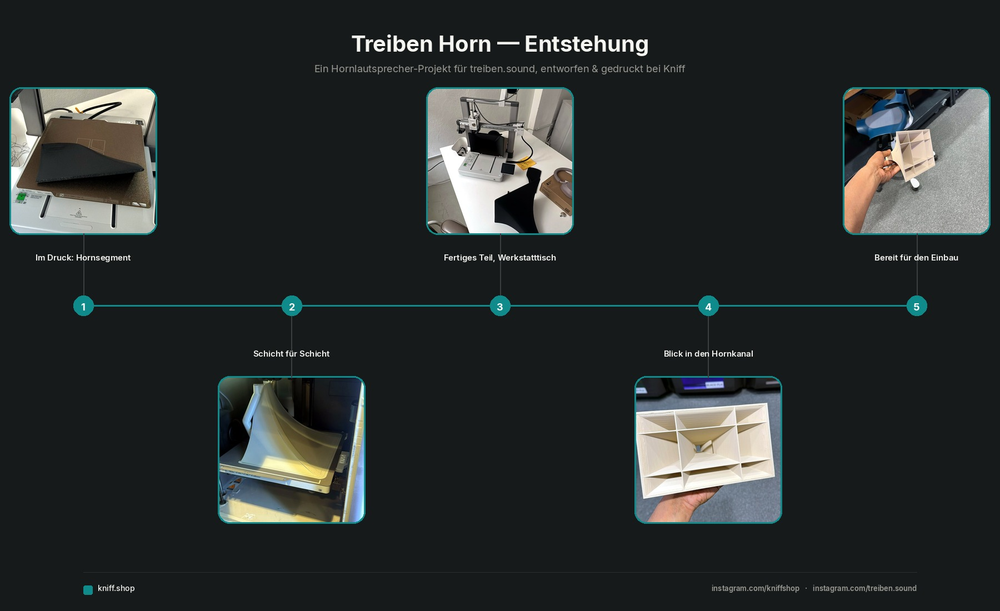
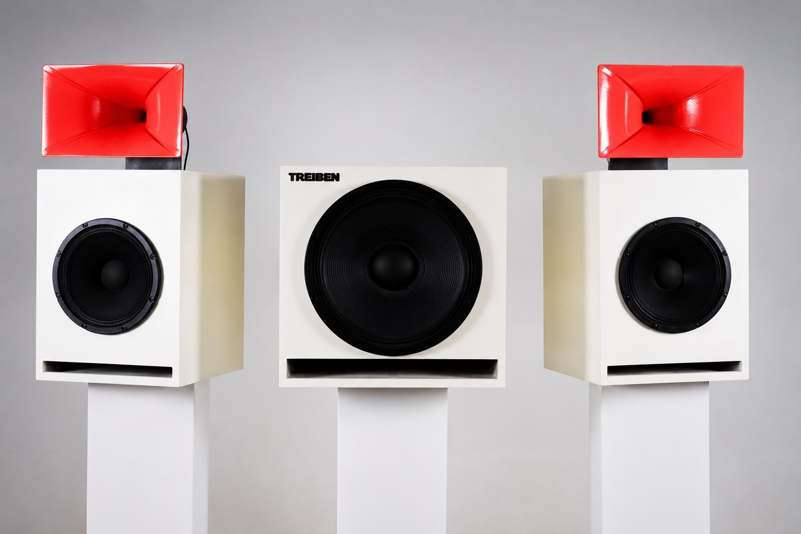

Custom-Druck
Deine Idee, gedruckt nach Maß.
Vom Alltagshelfer über Ersatzteile und handwerkliche Bauteile bis zu Modellen für Architektur- und Planungsbüros: Wir drucken so ziemlich alles, was ein 3D-Drucker hergibt. Schick uns STL, STEP, eine Skizze oder nur eine Beschreibung. Wir prüfen Druckbarkeit und Aufwand und melden uns mit einem Festpreis, bevor irgendetwas auf den Drucker geht. Auch Einzelstücke.
Womit Kunden zu uns kommen
Wenn es das nicht zu kaufen gibt.
Ob privat oder für den Betrieb – das sind die Anfragen, die am häufigsten auf der Bank landen:
- Ersatz- und Passteile: ein verlorener Deckel, ein gebrochener Clip, ein Adapter zwischen zwei Systemen.
- Halterungen und Wandhalter für Geräte, Werkzeug, Fernbedienungen, Kabel – passgenau statt Universallösung.
- Prototypen und Funktionsmuster zum Anfassen, bevor eine Serie in Auftrag geht.
- Aufbewahrung nach Maß: Schubladeneinsätze, Boxen und Sortierkästen in genau der Größe, die passen muss.
- Modelle für Architektur-, Messe- und Planungsbüros.
- Kleinserien desselben Teils, mit Mengenrabatt ab größeren Stückzahlen.
So funktioniert's
Vier Schritte von der Idee bis zum fertigen Teil.
-
Projekt einreichen
Datei hochladen (STL, 3MF oder STEP) oder kurz beschreiben, was du brauchst. Maße, Material-Wunsch und Stückzahl helfen uns bei der Einschätzung.
-
Prüfung
Wir schauen uns dein Modell an: Ist es so druckbar? Braucht es Stützstrukturen? Wie lange dauert der Druck, wie viel Material wird benötigt? Wenn etwas klemmt, melden wir uns mit einem Vorschlag.
-
Individuelles Angebot
Du bekommst einen Festpreis auf Basis von Material, Druckzeit, Nachbearbeitung und Stückzahl, inklusive voraussichtlicher Lieferzeit. Persönliche Rückmeldung, kein Callcenter.
-
Druck und Versand
Nach deiner Bestätigung drucken wir in Deutschland, prüfen jedes Teil kurz von Hand und verschicken sorgfältig verpackt. Bei größeren Stückzahlen mit Mengenrabatt.
Für die Einschätzung
Je mehr Infos, desto genauer das Angebot.
- 3D-Datei im Format STL, 3MF oder STEP, falls vorhanden.
- Maße oder Größe, falls keine Datei vorliegt. Eine Skizze oder Beschreibung reicht für den Anfang.
- Material und Farbe. Standard ist mattschwarzes PLA. Auf Anfrage über zehn weitere Farb- und Materialvarianten, u. a. Weiß, Pastellgrün, Wiesengrün, Pastell Pink, Pastell Blau und Metallic Silber, dazu glänzendes PLA und PETG. Neue Farben drucken und prüfen wir vor der Zusage als Muster.
- Stückzahl. Einzelstück, Kleinserie oder größere Auflage.
- Verwendungszweck. Wichtig für Materialwahl und Stabilität.
Was es kostet
Festpreis vorab, kein Stundensatz-Blindflug.
Jede Anfrage bekommt einen konkreten Preis, bevor irgendetwas gedruckt wird. Die Einschätzung ist kostenlos und unverbindlich. Fünf Dinge bestimmen die Zahl:
- Materialmenge. Volumen und Wandstärke des Teils, plus Stützmaterial bei Überhängen.
- Druckzeit. Größe, Detailgrad und gewählte Qualität. Große oder filigrane Teile brauchen länger.
- Material. Standard-PLA ist am günstigsten; PETG, Sonderfarben oder Metallic-Optik kosten mehr.
- Nachbearbeitung. Entgraten reicht meist. Schleifen, Kleben oder Lackieren kommt extra dazu.
- Stückzahl. Ab mehreren Exemplaren sinkt der Stückpreis, weil Einrichtung und Prüfung sich verteilen.
Kleine Alltagsteile liegen meist im niedrigen zweistelligen Bereich, größere oder technische Teile darüber. Den genauen Preis nennen wir nach kurzer Prüfung deiner Anfrage – in der Regel innerhalb von zwei Werktagen.
Aus der Werkstatt
Ein Projekt von der Idee bis zum Ergebnis.
„Treiben Horn" für @treiben.sound (Marke TREIBEN). Von der Anfrage über den Testdruck bis zum fertigen Teil.


Leg dein Projekt auf die Bank
Anfrage senden.
Du bekommst eine ehrliche Einschätzung und einen Festpreis, bevor irgendetwas gedruckt wird. Antwort in der Regel innerhalb von zwei Werktagen.
Lieber direkt schreiben? kniffshop@gmail.com oder zum Kontakt.
Häufige Fragen
Bevor du fragst.
Wie viel kostet ein individueller Druck?
Das hängt von Größe, Material, Druckzeit, Nachbearbeitung und Stückzahl ab. Deshalb erstellen wir für jede Anfrage ein persönliches Angebot, statt pauschale Preise zu nennen.
Gehört mir das Nutzungsrecht an meinem eingereichten Design?
Ja, du bleibst Inhaber:in der Rechte an deiner eingereichten Datei. Mit der Einreichung bestätigst du, dass du die Rechte an dem Design besitzt oder zur Nutzung berechtigt bist. Wir drucken keine fremden, urheberrechtlich geschützten Designs ohne nachgewiesene Erlaubnis.
Kann ich mein Teil zurückgeben, wenn es mir nicht gefällt?
Individuell nach deinen Vorgaben angefertigte Teile sind gesetzlich vom Widerrufsrecht ausgenommen (§ 312g Abs. 2 Nr. 1 BGB). Details in unserer Widerrufsbelehrung. Bei Mängeln oder Druckfehlern unsererseits melde dich einfach, dann finden wir eine Lösung.
Welche Materialien sind möglich?
Standardmäßig drucken wir in PLA, einem pflanzenbasierten Material. Andere Materialien wie PETG für mehr Hitzebeständigkeit sind auf Anfrage möglich. Schreib uns einfach, wofür das Teil gedacht ist.